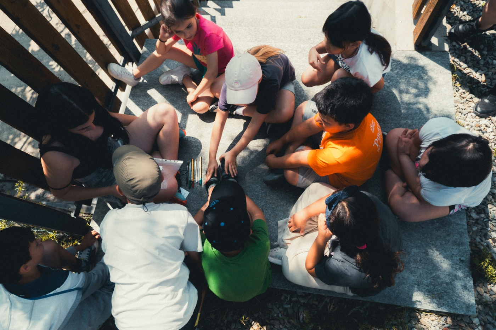
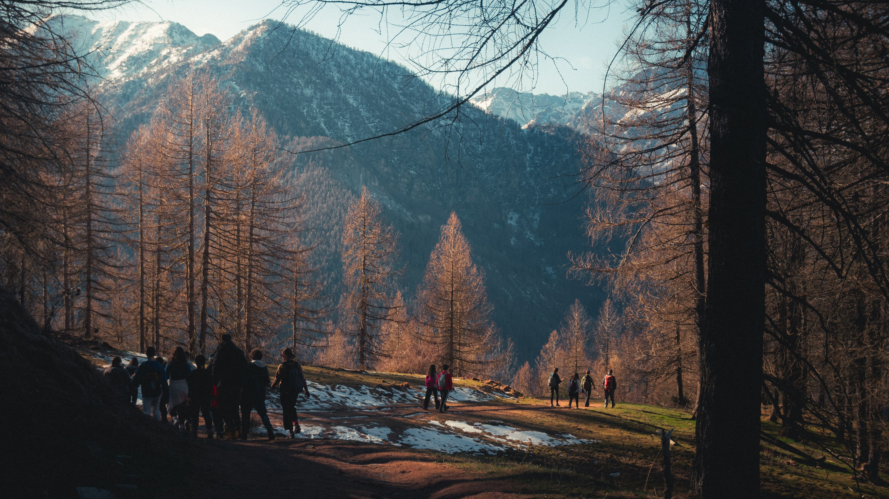
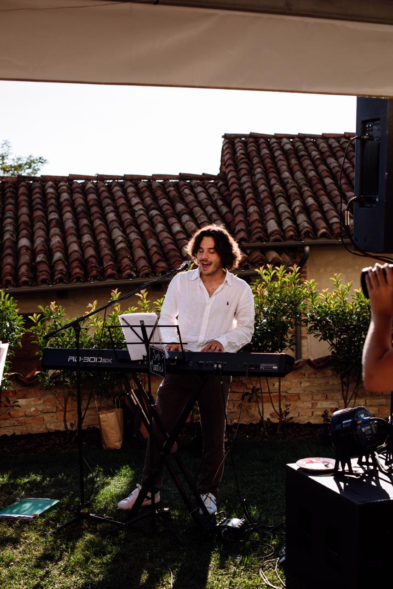
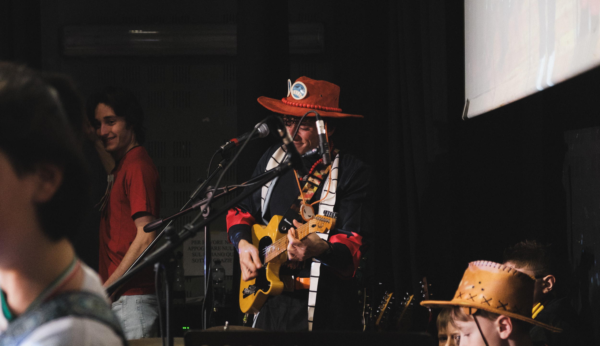
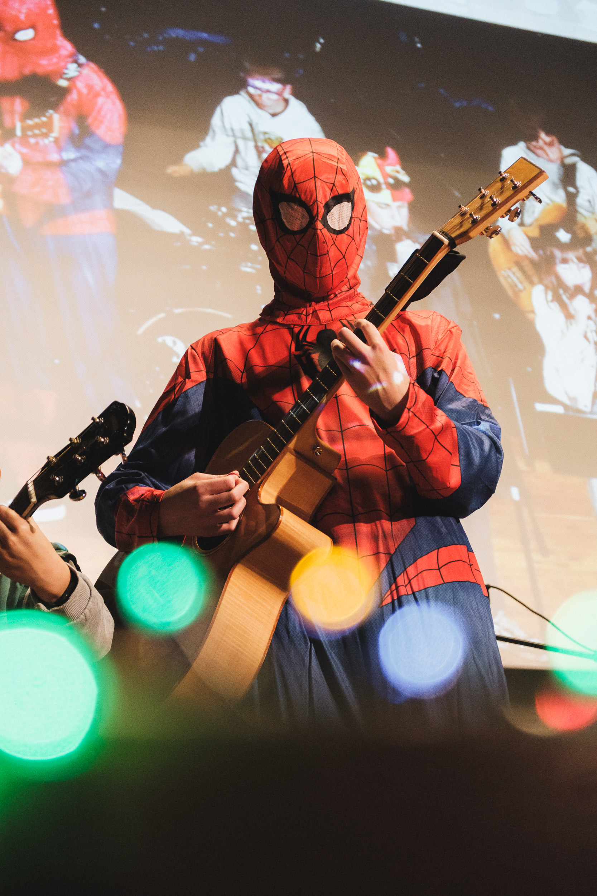

Oratorio Ferrone · Scala del Re — 2015 – Present
Ten years
showing up.
Oratorio
Ferrone.
Parish youth centre in Mondovì. I've been an educator here since 2015 working with children from primary school through high school, running camps, hikes, and activities year-round.
Growing up
by helping
others do it.
I started as a volunteer at 14. By now I've been an educator for ten years which means I've watched entire groups of kids grow from primary school to graduation, and I've grown up alongside them.
My role is to organise activities, run camps, lead hikes in the mountains, and be a reference point. But the job is really about presence: showing up consistently, year after year, for the same people.
I also contribute to the operational management of the oratory: logistics, planning, helping improve how things work. The same instinct that drives my design work: always asking how something could work better.


Summer camp 2025 — Video
I started as a volunteer at 14.
I'm still here.
That tells you something.
Scala
del Re.
Music school in Mondovì. I teach piano and guitar to children, and contribute to school projects bringing music education directly into classrooms.



What I teach
Piano · Guitar
Ages 6–16.
Individual and group lessons, preparation for end-of-year recitals, and in-school music projects in partnership with local primary schools.
What it teaches me
Teaching music to a six-year-old who has never touched a piano is one of the most useful exercises in communication I know. You have to find the right metaphor every time — for every child, a different door into the same room.
That's a design problem. And I've been solving it since 2015.